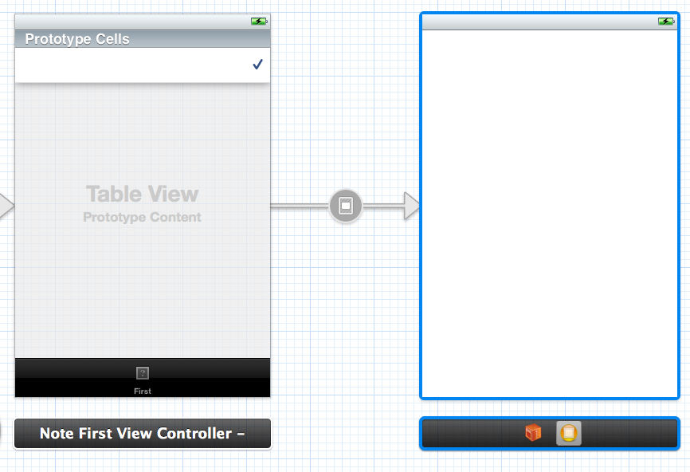

When I select a prototype cell, it does not follow segue and show the destination controller, as defined in the storyboard above.
The root cause seems to be that, since my originating controller is not a navigation controller, it does not respond to a ‘push’ segue.
Once I change the segue type to ‘modal’, it works.